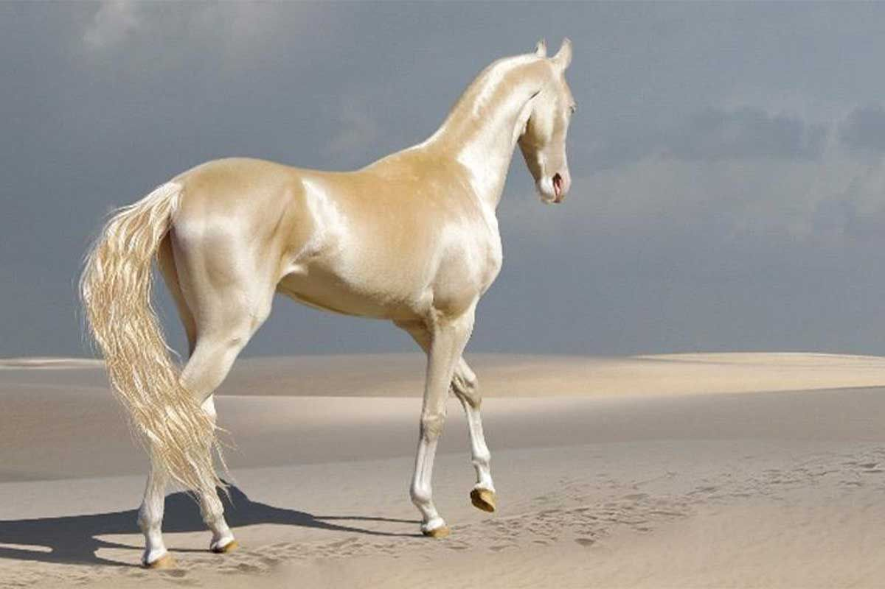
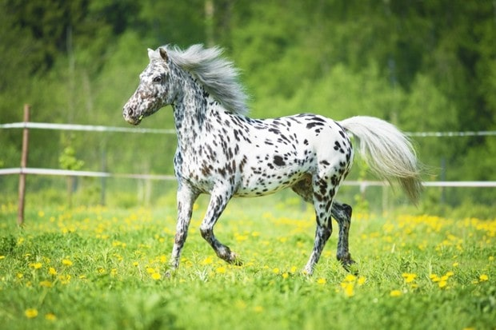
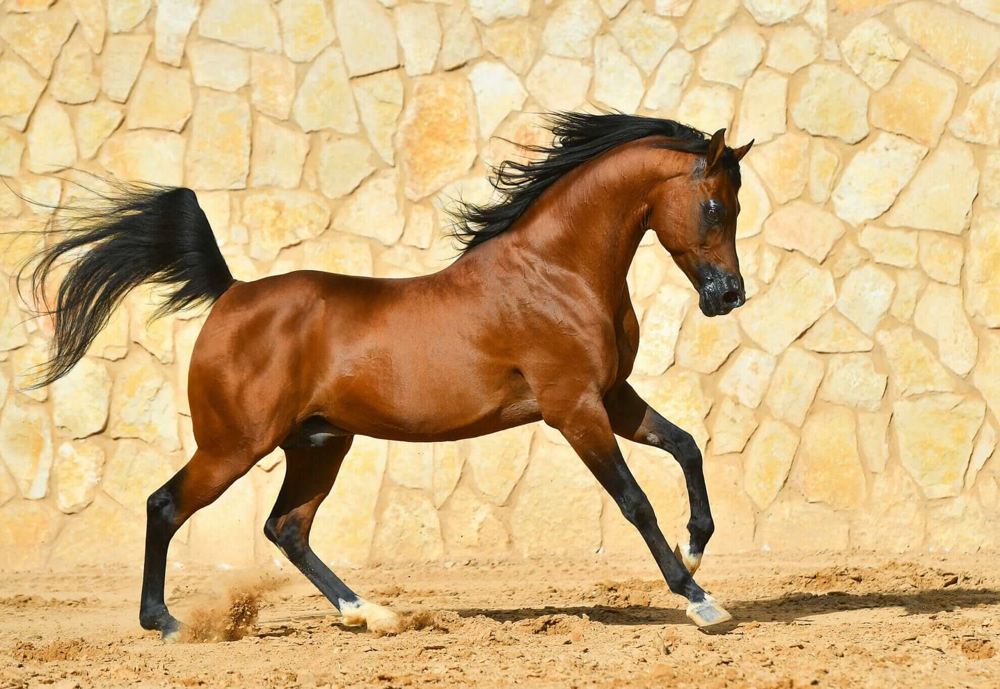
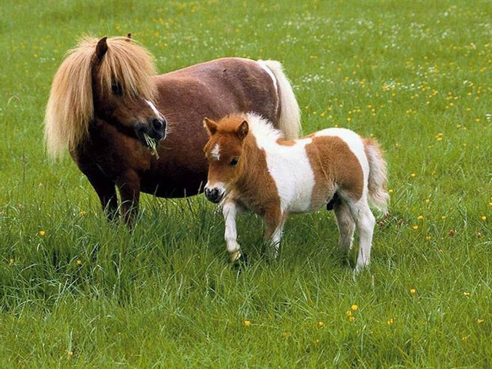
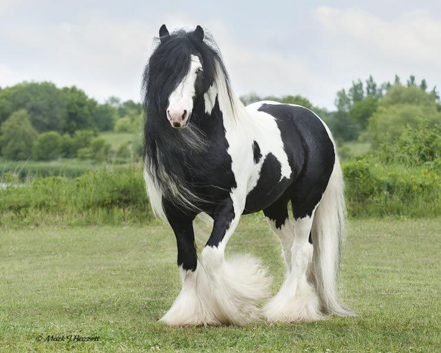
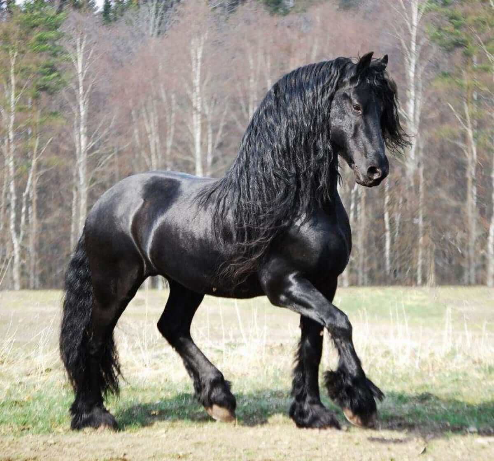
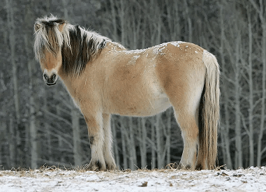
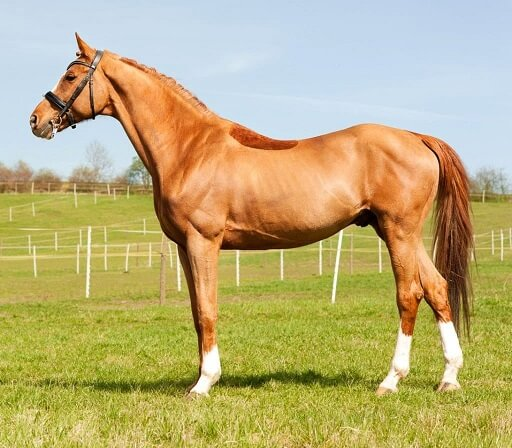

Akhal-Teke with cremello suit
Akhal-Teke breed bred in the territory of modern
Turkmenistan (Akhal-Teke), presumably about 5000 years ago.
This is the oldest of the cultured breeds, which has influenced many others.

Running spotted Appaloosa in nature
Appaloosa is bred and popular in the USA, best known for its colorful spotted coat pattern. The color can vary from dark with white spots to almost white with small dark spots.

Arabian horse of the chestnut color
Arabian horse is an ancient breed of riding horses bred on the territory of the Arabian Peninsula in the IV-VII centuries AD. Due to their high endurance, Arabs regularly take part in long horse runs that last 5-6 days, and every day it is necessary to cover a distance of up to 100 miles.

Mom Falabella with her foal
Falabella is a miniature horse rather than a pony and one of the smallest breeds of the present generation of horses. The Falabellas, with generations of selective breeding, can survive in severe weather conditions, and sometimes even better than their taller counterparts. They are characterized by extremely long life.

Black and white Gypsy Vanner
Known for their excellent temperaments and recognized for their beautiful feathering and eye-catching coats, Gypsy Vanner horses are quickly growing in popularity today. These horses may have been raised to pull caravans. Gypsy Vanners can be well-paired with children, as well as with beginner and advanced adult riders.

Friesian horse with thick mane
Friesian horses are a tall, big-boned equine breed that typically has a black coat with thick manes and tails. These animals have the desired temperament and athletic ability to perform well in dressage. They are also suitable horses for beginners or advanced riders.

Young Fjord walk in winter
The Norwegian Fjord Horse is one of the world's oldest and purest breeds. It is believed that the original Fjord Horse migrated to Norway and was domesticated over 4,000 years ago. Herds of wild Fjord Horses existed in Norway after the last ice age.

Thoroughbred with red suit
Thoroughbreds are the most popular racing horse in North America. This breed is considered a "hot-blooded" horse, which means it's known for its agility, speed, and spirit.